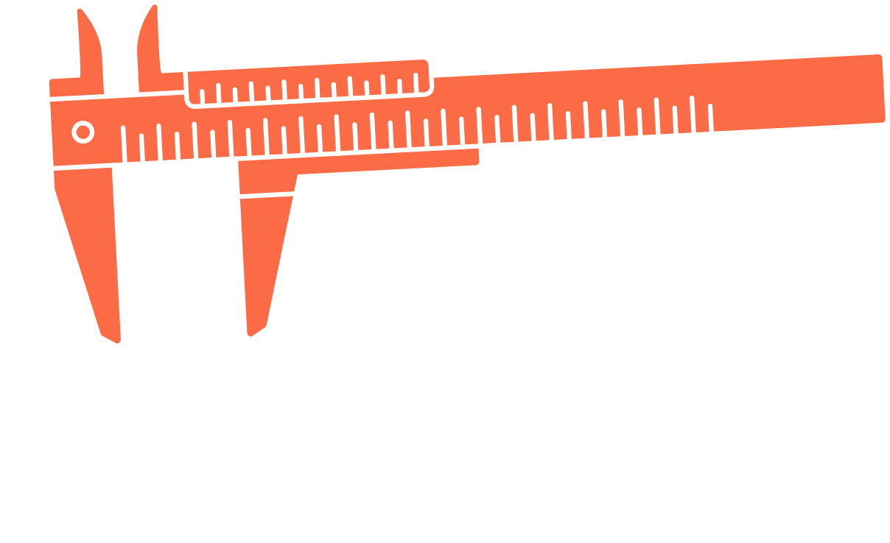
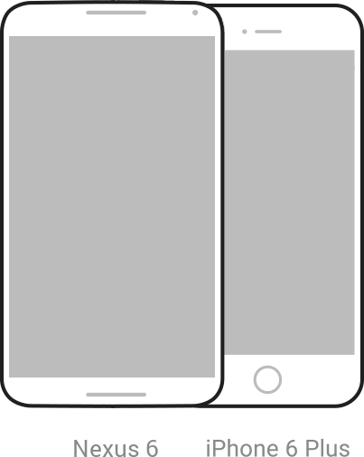
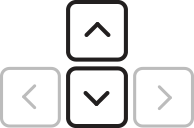
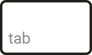

Here is the QR viewer profile generated for:
Getting started
1
You will need an Android or iOS smartphone that meets some basic requirements.

3

Place your phone in the viewer. Use the viewer parameter form below to calibrate your VR scene.

Tip: The VR scene is synced to the Viewer Parameter Form. You can adjust the parameters using your keyboard while the viewer is held up to your head.

Use the “tab” key to jump between fields. Use the up and down keyboard arrows to increase or decrease values within the fields.
Viewer Parameter Form
Fill in the fields below to establish your viewer profile. Submit the form to generate a viewer QR profile.
Usage Guidelines
Before using this profile for your viewer, please download and thoroughly read the QR viewer profile usage guidelines (PDF). The information in these guidelines will help you to understand the appropriate use of the generated viewer profile, and learn about do's and don'ts when developing marketing, packaging and other materials for your viewer.